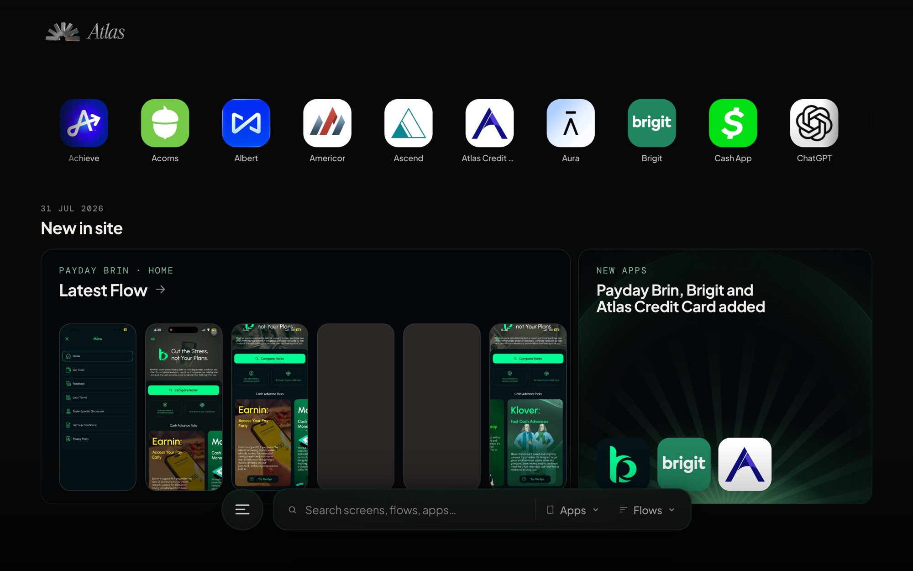
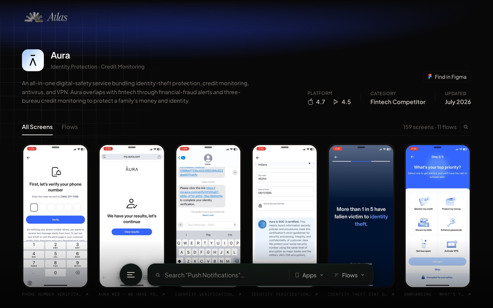
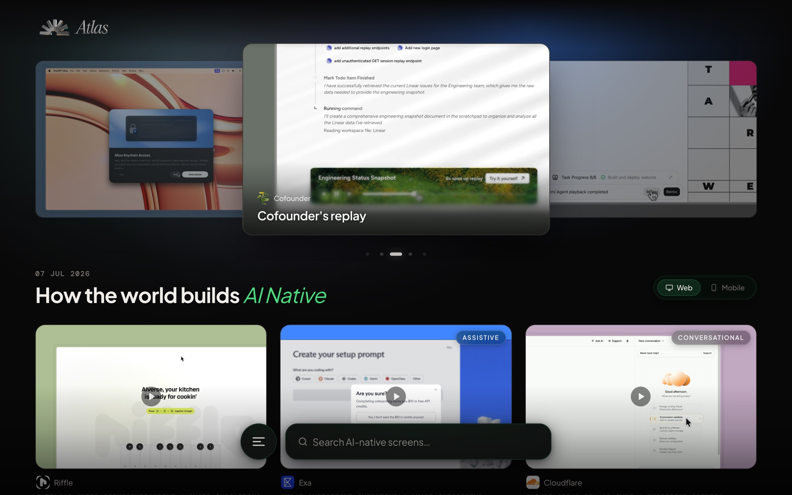

Competitor Hub: the tool I designed, then decided to build.
A full-stack competitive intelligence platform for Bright Money. Screens from every rival fintech, indexed by flow, pattern and screen type, on real infrastructure three days after I opened the repo.

Our competitive research was living in ten different places.
Every quarter, someone on the Bright design team would open Figma and start dragging screenshots. From Mobbin, from personal phones, from a Slack thread, from a folder titled "cleo new onboarding v3 FINAL". By the time a scan finished, the board had grown past the point where anyone could find the one screen they needed for a meeting in an hour.
The information existed. Locating it did not.
Every artifact was orphaned the moment the quarter ended, and the next scan started from zero. A PM would ask "what does Dave do here" and we would answer with a guess, or with a fifteen-minute dig through last quarter's board.
I could design the tool, or I could build it. I did both.
I had spent the last year using Claude Code as if it were a second designer. Small internal tools, Figma plugins, a scraper here and there. This felt like the moment to stop treating that skill as a hobby.
The scope was honest. Not a startup. Not a product. A tool for our design and product team, with a clean URL, that felt like a real product because pretending it was one would raise the standard.
Competitors, flows, screens. In that order.
The data model came before any pixel. Screens without flows are a Dropbox folder. Flows without competitors are a mood board. The three-level hierarchy is what turns a pile of screenshots into a thing you can navigate by question, which is "how does Cleo handle overdraft protection", not "screen 47 of 212".
Each screen carries Mobbin-style metadata — screen type, UI patterns, elements present — which turns search from a filename hunt into a query. Show me every empty state across every credit-builder flow. Show me every place a competitor asks for an SSN.

A two-step pipeline: package first, then upload.
The single most important architectural call was separating tagging from uploading. Tagging is judgment. Uploading is plumbing. Mixing them means one bad tag corrupts a batch of hundreds of screens on live infra. Splitting them means judgment happens in a JSON file you can review, revise, or throw away.
Views every screenshot, derives flow order from FigJam coordinates on the research board, and writes a package JSON. All names, order and taxonomy live in that one file.
Takes the package JSON, runs a dry-run preview, then uploads images to S3 and populates the Postgres tables on RDS. The uploader never authors metadata. It only trusts the package.
Logo, description, category, availability, and the other things the uploader skips get filled in after. This is the part where the tool starts feeling like a product instead of a database.
Small decisions that stopped it feeling like an internal tool.
Grid of competitor cards. Logo, count of flows, count of screens. Cold and legible.
Card hover surfaces the last update date and the most-referenced flow. One extra second of information for zero extra clicks.
Screen viewer showed one image with tags listed underneath it.
Split view. Screen on the left. Tags, flow position, and neighbouring screens on the right. Keyboard arrows scrub the flow. It stopped feeling like a gallery and started feeling like a study surface.
Search returned a flat list of screens.
Search grouped by competitor, with a sticky filter bar for screen type and pattern. Faceted, not flat. This is the query the team runs.
38s, has soundthe film I cut to launch it internally
The moves above, in motion. Scrubbing a flow and the split viewer are the two things a screenshot cannot argue for, so this is the honest way to show them. Every app in it is a competitor's public product.

Real infra means real deploy pain, then real deploy rituals.
The EC2 box could not git pull. Deploying meant rsync over SSH, migrations against RDS, verify, rollback ready. The first deploy took hours and taught me every mistake worth learning; the one after took minutes. Eventually it was a single command that ships the site and rolls itself back if the health check flatlines.
This is the part nobody tells you about vibe-coding. Making something exist is one problem. Keeping it alive is a different one.
What changed after we shipped it.
The three-day number is the one people react to, and it is the least interesting of the three. The seven weeks after it bought an ads library, on-demand vision analysis of competitor screens, and a taxonomy that survived a full quarterly cycle. Three days is a demo. Seven weeks is a tool.
The Q2 2026 cycle ended with an upload rather than a Figma dump, which is a first. What I do not have is adoption data, or proof it survives a quarter I am not personally driving. The honest claim is that it holds a real cycle and is faster to search than the Slack archive it replaces.
I could have written a Notion doc, handed it to engineering, and waited a quarter.
I do not think every designer needs to code. I do think the ones who can will keep building the tools their own team needs, because they understand the brief and nobody else is going to prioritise it.